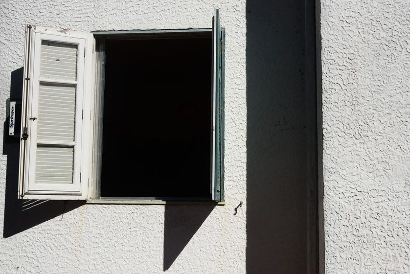

Ultradian Rhythm and the Myth of the Long Push

Somewhere around the ninety-minute mark, most people notice their attention starting to fray. The sentence they're reading has to be read twice. The task that felt manageable an hour ago now feels like wading through wet sand. It's tempting to read this as a personal failing — a lapse in discipline that more coffee or more willpower should fix. But there's a quieter explanation, one that has less to do with character and more to do with a rhythm the body seems to keep whether or not anyone is paying attention to it.
A Cycle Beneath the Clock
Researchers studying sleep in the mid-twentieth century noticed that the brain doesn't move through the night in one smooth arc. It cycles — roughly every ninety minutes — through different depths and types of activity. What came as a surprise to some was that this same rough cadence appears to continue during waking hours, in a looser, more variable form. Some researchers call this the ultradian rhythm: a cycle shorter than a full day (unlike the circadian rhythm, which spans about twenty-four hours), repeating several times between morning and night.
The idea isn't that everyone's cycle runs exactly ninety minutes, like a metronome. It tends to be looser than that — somewhere in the range of eighty to a hundred and twenty minutes for many people, and it can shift with sleep quality, stress, or simply the kind of task at hand. What seems more consistent is the shape of it: a period of rising focus, a peak, and then a trough where concentration and motivation both seem to dip before recovering. Anyone who has read the same paragraph three times without absorbing it, or found themselves reorganizing a desk drawer instead of finishing a report, may have been sitting in one of those troughs.
Why the Trough Gets Treated as a Problem
Most workdays are not built around this shape. Meetings run on the hour, deadlines don't care what cycle a body happens to be in, and open-plan offices and open tabs alike reward the appearance of continuous effort. So when the trough arrives, the common response is to push through it — another cup of coffee, a harder stare at the screen, a private little pep talk about focus. The piece explores The Case for a Slow First Hour touches on something related: the instinct to treat the body's natural pace as an obstacle rather than as information.
The trouble with pushing through is not that it never works. Sometimes it does, especially for short stretches. The trouble is what tends to happen next: the work done during a forced trough often needs to be redone, reread, or re-thought later, once the next rising phase arrives. The push doesn't so much save time as borrow it, and the interest on that loan is usually paid the following day, in the form of a groggier morning or a shorter fuse.
The body doesn't ask for permission to rest. It just gets quieter, and waits to see whether anyone notices.
What the Trough Might Actually Be For
It helps to think of the dip not as an absence of productivity but as a different kind of activity — consolidation rather than acquisition. During the down-phase, attention loosens its grip; ideas that were stuck an hour ago sometimes rearrange themselves without any conscious effort at all. This is part of why a short walk or a stretch of staring out a window can feel more useful than another attempt at brute force. It isn't that the mind stopped working. It changed what kind of work it was doing.
This connects to something explored more directly in Attention Residue: Why Switching Tasks Costs More Than You Think — the cost of forcing a transition before the mind is actually ready for one. Working with the trough, rather than against it, often means recognizing it early and giving it somewhere small to go, rather than fighting it for another forty-five minutes.
A Rough Shape, Not a Rule
- The length of the cycle seems to vary by person, by day, and by the kind of task — reading dense material may drain attention faster than a familiar routine chore.
- The trough is not always dramatic. Sometimes it shows up as mild restlessness rather than obvious fatigue.
- Noticing the pattern over a week or two tends to be more useful than trying to force it into a fixed ninety-minute block on day one.
Working in Waves Instead of Straight Lines
None of this requires a total overhaul of a day. It's less about redesigning a schedule and more about softening the expectation that focus should be flat and constant from morning to evening. A short pause at the first sign of a trough — even five unhurried minutes away from the screen — often does more than forcing another half hour of diminishing effort. The goal isn't to eliminate the dip. It's to stop treating it as a malfunction.
The table below offers a loose sketch of how the rising and falling parts of the cycle tend to feel, for people who have started paying attention to their own pattern. It isn't a prescription, just a rough map some readers have found useful as a starting point.
| Phase | How it often feels | What tends to help |
|---|---|---|
| Rising | Ideas connect easily; focus feels almost automatic | Protecting it — fewer interruptions, not more input |
| Peak | Deep absorption in one task; time seems to move faster | Letting it run its course without checking the clock |
| Early trough | Small distractions start to feel appealing | A short, unhurried break rather than forcing another sprint |
| Deep trough | Re-reading the same line; low motivation | Stepping away — a walk, a stretch, or simply quiet |
| Recovery | Attention gradually returns on its own | Easing back in with something low-stakes first |
A Day With More Give in It
Building a little slack into a schedule — a buffer between meetings, a task list that isn't wall-to-wall — makes room for the trough to pass without becoming a crisis. This is part of why the Stillhour app was built around gentle, unhurried timers rather than aggressive productivity streaks: the aim isn't to squeeze more hours out of a day, but to leave enough room for the day's natural rhythm to do some of the work on its own.
None of this is about optimizing every wave for output. It's closer to what a walk through In Praise of a Quiet House gets at — the idea that some of the most useful parts of a day are the ones that don't look like anything is happening at all.